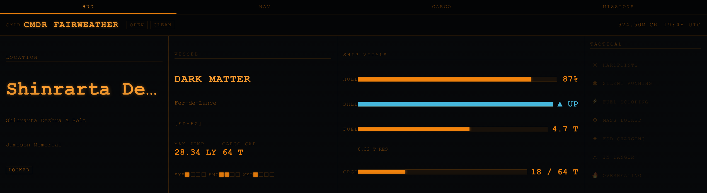
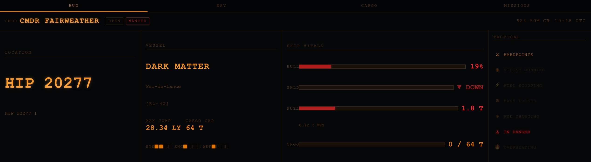
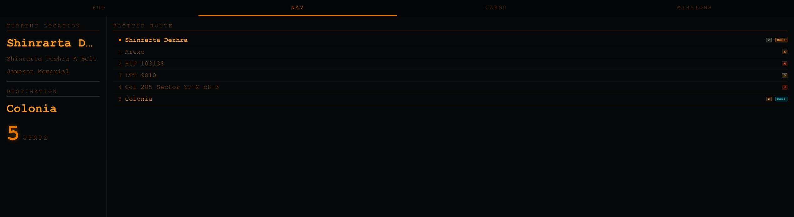
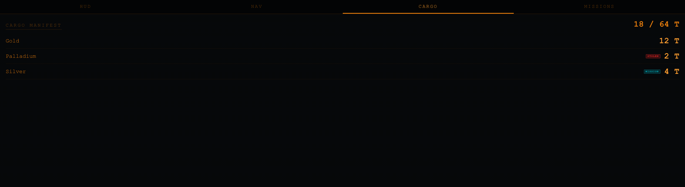
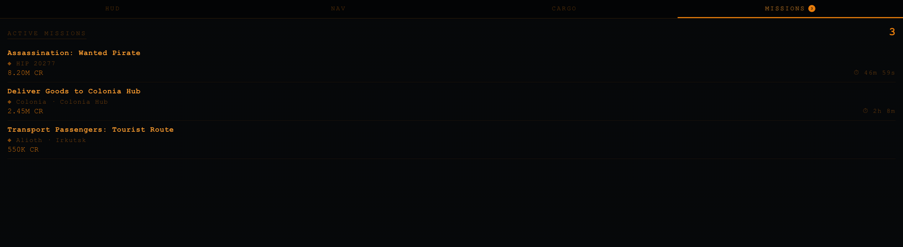
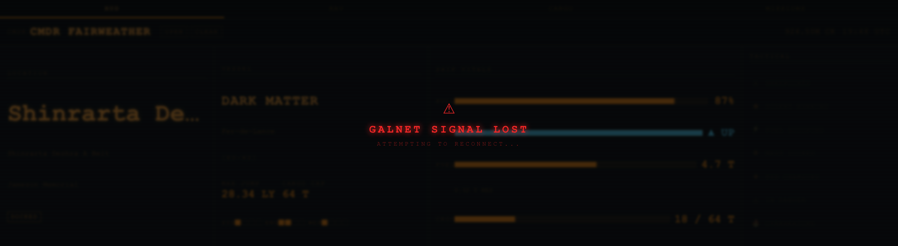

A real-time companion widget for the Corsair Xeneon Edge 14.5" touchscreen display — live ship telemetry, navigation, cargo manifest, and mission tracking, all in one tap.






At-a-glance ship telemetry: hull, shields, fuel, cargo bars, power pips, location, game mode, legal status, credits, and tactical flags (hardpoints, silent running, FSD, etc.).
Current location with body and station name. Plotted route with per-system star class colour-coding, jump count, and destination. Scrollable for long routes (Colonia runs, Beagle Point, etc.).
Full cargo manifest sorted alphabetically. Each line shows commodity, quantity in tonnes, and tags for STOLEN and MISSION cargo. Shows current / max capacity.
All active missions with destination, credit reward, and live countdown timer to expiry. Sorted by soonest expiry first. The orange badge on the tab shows how many missions are active.
Clone or download the repository:
git clone https://github.com/cfairweather/xeneon-elitedangerous.git
Or download the ZIP from GitHub and extract it anywhere you like.
Launch the Corsair iCUE application. Make sure your Xeneon Edge is connected and appears in the device list.
Click on the Xeneon Edge in iCUE, then select Widget Builder from the controls that appear.
Drag the com.fairweather.elitedangerous/ folder into the Widget Builder, or use File → Import Widget. The widget appears in your library as "Elite Dangerous HUD".
Drag the widget onto the XL-H slot (2536×696) on your Xeneon Edge canvas. This is the full-width slot that fills the screen — all four tabs and the tactical panel are visible here.
Download and install Node.js 18 LTS or later from nodejs.org. The installer adds node and npm to your PATH automatically.
Double-click companion\start.bat in the repository folder. The first run installs the single dependency (ws). Keep the window open while playing.
companion\start.bat
You should see:
[server] Elite Dangerous Journal Server [server] ws://localhost:31337 [server] Journal dir: C:\Users\...\Saved Games\...
cd companion npm install # first time only npm start
127.0.0.1:31337 only — it is not reachable from other computers on your network.
Start the game. The widget shows "Connecting to GalNet" with an animated scan bar until the companion server is running. Once the server is up and the game emits its first journal events, the HUD populates automatically.
If the connection drops mid-session, the widget shows "GalNet Signal Lost" and retains the last known data. It reconnects automatically with exponential backoff (max 30 second interval).
Any order works — the widget will wait and reconnect. But for the smoothest start:
companion\start.bat| Event | What the widget learns |
|---|---|
| LoadGame | Commander name, credits, game mode, ship |
| Location | Star system, body, station |
| FSDJump | New system, fuel level, route advancement |
| NavRoute | Full plotted route (NAV tab list) |
| NavRouteClear | Clears route display |
| Docked / Undocked | Station name |
| Loadout | Ship details, max jump range, cargo capacity |
| HullDamage | Hull health |
| ShieldState | Shields up/down |
| Cargo (with Inventory) | Full cargo manifest |
| CollectCargo / EjectCargo | Cargo delta updates |
| MarketBuy / MarketSell | Cargo delta updates |
| MissionAccepted | Add mission with reward & expiry |
| MissionCompleted/Failed/Abandoned | Remove mission |
| Status (NEW_STATUS_EVENT) | Flags, fuel, cargo, pips, legal state |
companion/server.js is ~200 lines of vanilla Node.js with a single
npm dependency (ws for WebSocket). It requires no config and has no cloud
or telemetry components.
| Behaviour | Detail |
|---|---|
| Journal polling | Every 500 ms — tails the latest Journal.*.log from byte offset; never re-reads old data |
| Status polling | Every 1000 ms — checks Status.json mtime before reading |
| Replay buffer | Last 300 journal events sent to each new connection so the widget rebuilds full state instantly |
| Port conflict | Exits with a clear error if port 31337 is already in use |
| Graceful shutdown | SIGINT / SIGTERM (Ctrl+C or Windows close button) |
Compatible with the elite-dangerous-journal-server convention:
{ "type": "NEW_EVENT", "payload": { "event": "Docked", ... } }
{ "type": "NEW_STATUS_EVENT", "payload": { "Flags": 12345, "Fuel": {...}, ... } }
The HUD tab adapts to four slot sizes using CSS aspect-ratio and min-height media queries — no JavaScript class toggling.
| Slot | Approx. size | HUD panels shown |
|---|---|---|
| XL-H | 2536×696 | Location, Vessel, Vitals, Tactical |
| L-H | ~1800×696 | Location, Vessel, Vitals (Tactical hidden) |
| M-H | ~840×696 | Location, Vitals (Vessel + Tactical hidden) |
| S-H | ~800×400 | Location, Vitals (header + labels stripped) |
The NAV, CARGO, and MISSIONS tabs are single-column scrollable layouts and work in any slot size.
After making UI changes, regenerate the preview images with Playwright:
pip3 install playwright python3 -m playwright install chromium # From the repo root — start a local server first: python3 -m http.server 5500 --directory com.fairweather.elitedangerous & python3 scripts/screenshot.py
Screenshots are written to docs/images/.
This project is released under the Apache License 2.0. See the LICENSE file in the repository for the full text.